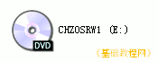
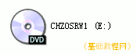
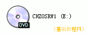

光盘刻录基础教程
作者：TeliuTe 来源：基础教程网
光盘是一种只读存储设备，利用激光反射原理来读取数据，读取光盘的设备是光驱，下面我们来看一个练习；
1、光盘
1）没有存入数据的光盘是空白盘，根据光盘的容量大小分为：普通CD-R光盘，大约存储 650M左右，DVD-R光盘，可以存储 3.8G以上，还有一种可擦除的空白盘CD-RW，可以重复使用；
2）已经存有数据的盘分为电脑数据光盘，音乐CD光盘，VCD影碟，DVD 影碟等；

3）数据光盘只能在电脑上查看里面的文件，大多数计算机程序软件是这种光盘，
音乐CD和影碟既可以在电脑上播放，也可以在影碟机中播放；
2、光驱和刻录机
1）用来读取光盘的设备称作光驱，分为CD-ROM和DVD-ROM，普通光驱只能读取普通光盘，而DVD光驱既可以读取DVD光盘，也可以读取普通CD光盘；
2）刻录机主要用来制作各种数据光盘，音乐、视频光盘等，它也可以像光驱一样读取光盘；
3）CD-RW 刻录机，只能制作普通的光盘，DVD-RW 可以制作DVD光盘和普通光盘，
区分CD/DVD-RW的方法是，打开“我的电脑”，查看光驱的盘符可以分辨出是哪一种；
本节学习了光盘和刻录机的基本知识，如果你成功地完成了练习，请继续学习下一课内容；
本教程由86团学校TeliuTe制作|著作权所有
基础教程网：http://teliute.org/
美丽的校园……
转载和引用本站内容，请保留作者和本站链接。